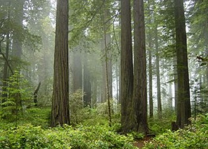

California is a state located on the West Coast of the United States. It is the most populous U.S. state, home to one out of eight
people
who live in the U.S., with a total of 38 million people, and it is the third largest state by area (after Alaska and Texas). California
is
bordered by Oregon to the north, Nevada to the east, Arizona to the southeast, and the Mexican state of Baja California to the south.
It is home to the nation's second and fifth most populous census statistical areas
|
|
What is now California was first settled by various Native American tribes before being explored by a number of European expeditions
throughout the 16th and 17th centuries. It was then claimed by the Spanish Empire as part of Alta California in the larger territory
of New Spain. Alta California became a part of Mexico in 1821 following its successful war for independence, but would later be ceded
to the United States in 1848 after the Mexican-American War
|
 |
California's diverse geography ranges from the Pacific Coast in the west, to the Sierra Nevada in the east - from the Redwood-Douglas fir
forests of the northwest, to the Mojave Desert areas in the southeast. The center of the state is dominated by the Central Valley, a major
agricultural area. California contains both the highest and lowest points in the contiguous United States (Mount Whitney and Death
Valley),and has the 3rd longest coastline of all states
|
 |
At least half of the fruit produced in the United States is now cultivated in California, and the state also leads in the production of
vegetables. Other important contributors to the state's economy include aerospace, education, manufacturing, and high-tech
industry. If it were a country, California would be the 8th or 9th largest economy in the world and the 34th most populous.
|

|